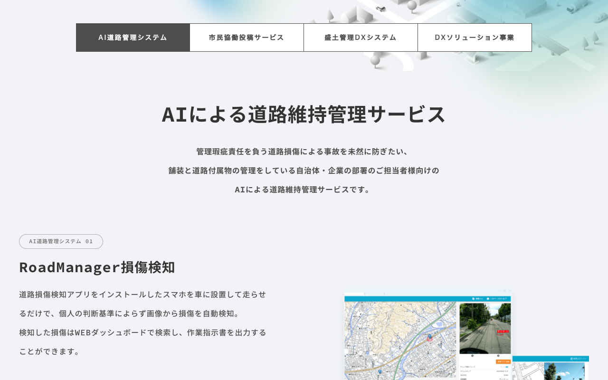

概要
- パトロール車のダッシュボードにスマートフォンを設置するだけで導入可能
- 走行中にAIが路面損傷（ポットホール・ひび割れ・わだち掘れ等）をリアルタイムで自動検出する
- 検出結果は地図上に自動マッピングされ、損傷の位置・種類・深刻度を一目で把握できる
- 国交省カタログ掲載技術。全国40以上の自治体で導入実績あり
製品画面：RoadManager

出典: https://urbanx-tech.com/services
| 従来の路面点検 | AI路面診断 | |
|---|---|---|
| 方法 | 専用車両（路面性状測定車） | スマートフォン1台 |
| コスト | 100〜300万円/km | 専用車の約1/20 |
| 頻度 | 数年に1回（高コストのため） | 日常パトロールで毎回実施可能 |